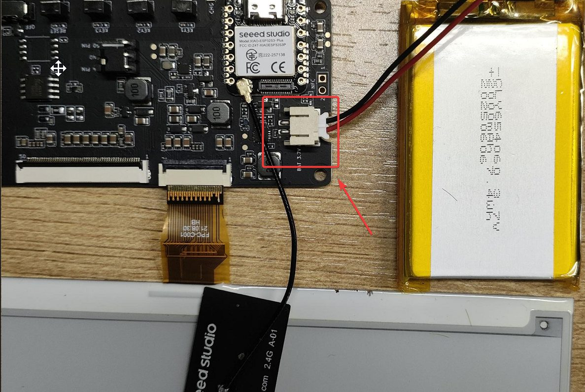
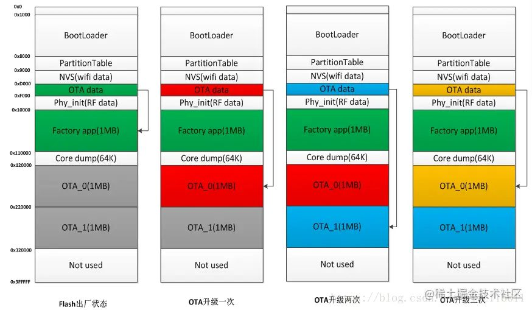

第十七课：XIAO ESP32S3 低功耗、电源管理与系统可靠性
前面我们已经学习了 Wi-Fi、MQTT、HTTP、WebSocket、音频、摄像头和边缘 AI。
这些功能能够让 XIAO ESP32S3 变成一台智能设备，但距离真正的产品还有一个关键问题：
如何让设备在电池供电时尽可能省电，并且在断网、欠压、程序异常或意外重启后仍然能够可靠工作？
本课继续以普通版 Seeed XIAO ESP32S3 为主控，使用 ESP-IDF 开发。
一、ESP32-S3 为什么需要电源管理？
ESP32-S3 的功耗不是固定的。
同一块开发板，在不同工作状态下，电流可能相差很大。
例如：
- CPU 高速运行；
- Wi-Fi 发射；
- Wi-Fi 待机；
- CPU 空闲；
- Light Sleep；
- Deep Sleep。
典型工作状态的相对功耗
1. 为什么不能只看 ESP32-S3 芯片的数据手册？
因为你使用的是完整开发板。
实际电池电流可能包括：
其中：
- ：芯片本身电流；
- ：稳压电路自身消耗；
- ：板载指示灯电流；
- ：麦克风、传感器、显示屏等外设电流。
因此，芯片的 Deep Sleep 电流不等于整块 XIAO 开发板的 Deep Sleep 电流。
二、ESP32-S3 的电源域与时钟域
ESP32-S3 内部不是所有模块都必须同时工作。
可以把它理解成一座工厂。
不同车间可以根据任务需要开启或关闭。
1. 什么是时钟门控？
数字电路通常依靠时钟信号运行。
当某个模块不需要工作时，可以关闭它的时钟，减少动态功耗。
这称为 Clock Gating。
2. 什么是电源门控？
某些电源域可以在低功耗状态下断电。
相比仅停止时钟，断电通常能够进一步降低功耗，但也会丢失该电源域中未被保留的状态。
3. 为什么休眠后有些数据会丢失？
因为休眠期间，部分 RAM 和外设可能断电。
所以要区分：
- 普通 RAM；
- RTC 保留内存；
- Flash；
- NVS。
不同睡眠模式保留的数据不同。
三、四种重要的运行与休眠状态
| 模式 | CPU | Wi-Fi | 程序执行状态 |
|---|---|---|---|
| Active | 运行 | 可工作 | 正常运行 |
| Modem Sleep | 通常运行 | 无线模块间歇休眠 | 程序继续运行 |
| Light Sleep | 暂停 | 无法持续正常通信 | 唤醒后继续 |
| Deep Sleep | 主 CPU 停止 | 关闭 | 唤醒后重新启动 |
1. Active：正常工作
适合：
- 音频采集；
- AI 推理；
- 网络传输；
- 图像处理。
优点是响应快。
缺点是功耗较高。
2. Modem Sleep：无线模块省电
设备仍然保持 Wi-Fi 连接，但无线模块可以在部分时间进入省电状态。
ESP-IDF 提供：
esp_wifi_set_ps(WIFI_PS_MIN_MODEM);也可以根据应用选择其他支持的 Wi-Fi 省电配置。
但要注意：
Modem Sleep 可能增加网络响应延迟，特别是对于实时音频、低延迟 WebSocket 等应用。
3. Light Sleep：浅睡眠
CPU 暂停执行，部分状态得到保留。
唤醒后，程序可以从进入休眠的位置附近继续执行。
适合：
- 间歇性传感器采样；
- 短时间等待；
- 对唤醒延迟有要求的设备。
4. Deep Sleep：深度休眠
这是电池供电设备非常重要的模式。
进入 Deep Sleep 后：
- 主 CPU 停止；
- Wi-Fi 关闭；
- 大部分普通运行状态丢失；
- 只保留指定的低功耗域状态。
唤醒后通常重新经历启动流程，再执行 app_main()。
四、实战一：定时唤醒的 Deep Sleep
这是本课第一个推荐实际烧录的实验。
目标：
XIAO 启动
↓
打印启动信息
↓
等待 3 秒
↓
进入 Deep Sleep
↓
10 秒后唤醒
↓
重新启动
↓
重复执行1. ESP-IDF 完整示例
#include <inttypes.h>
#include "freertos/FreeRTOS.h"
#include "freertos/task.h"
#include "esp_log.h"
#include "esp_sleep.h"
#include "esp_system.h"
static const char *TAG = "SLEEP";
void app_main(void)
{
esp_sleep_wakeup_cause_t cause =
esp_sleep_get_wakeup_cause();
ESP_LOGI(
TAG,
"Wakeup cause: %d",
cause
);
ESP_LOGI(TAG, "Running...");
vTaskDelay(
pdMS_TO_TICKS(3000)
);
ESP_LOGI(
TAG,
"Entering deep sleep"
);
ESP_ERROR_CHECK(
esp_sleep_enable_timer_wakeup(
10ULL * 1000000ULL
)
);
esp_deep_sleep_start();
}2. 为什么使用 10ULL * 1000000ULL？
因为 esp_sleep_enable_timer_wakeup() 使用微秒作为时间单位。
ULL 用于确保表达式使用足够宽的无符号整数类型。
3. 预期现象
串口可能看到：
I SLEEP: Wakeup cause: 0
I SLEEP: Running...
I SLEEP: Entering deep sleep经过约 10 秒后，设备重新启动。
再次看到：
I SLEEP: Wakeup cause: 4
I SLEEP: Running...其中唤醒原因应以实际枚举值和日志为准。定时器唤醒对应 ESP_SLEEP_WAKEUP_TIMER。
五、RTC 内存：如何让 Deep Sleep 后保留变量？
普通变量：
int boot_count = 0;在 Deep Sleep 唤醒后通常不会保留上次运行时的值。
但 ESP-IDF 提供 RTC 保留内存相关机制。
例如：
RTC_DATA_ATTR int boot_count = 0;1. 完整示例
#include <inttypes.h>
#include "esp_log.h"
#include "esp_sleep.h"
RTC_DATA_ATTR static uint32_t boot_count = 0;
void app_main(void)
{
boot_count++;
ESP_LOGI(
"RTC",
"Boot count: %" PRIu32,
boot_count
);
ESP_ERROR_CHECK(
esp_sleep_enable_timer_wakeup(
5ULL * 1000000ULL
)
);
esp_deep_sleep_start();
}预期：
Boot count: 1
Boot count: 2
Boot count: 3但是需要注意：
RTC 保留变量并不等于永久存储。
断电、某些复位类型或 RTC 内存未保留的情况，仍然可能导致数据丢失。
2. RTC 内存和 NVS 的区别
| 特性 | RTC 保留内存 | NVS |
|---|---|---|
| Deep Sleep 保留 | 视配置和供电情况 | 是 |
| 完全断电保留 | 否 | 是 |
| 写入速度 | RAM 访问 | Flash 写入 |
| 写入寿命限制 | 无 Flash 擦写问题 | 有 Flash 擦写寿命 |
| 适合 | 睡眠周期计数 | 设备配置和持久状态 |
六、GPIO 唤醒：按下按钮唤醒设备
除了定时器，ESP32-S3 还可以使用符合条件的 GPIO 唤醒。
对于 Deep Sleep，应该使用芯片支持的 RTC GPIO 和对应的唤醒机制。
不能认为所有普通 GPIO 都可以直接用于 Deep Sleep 唤醒。
1. 按钮连接示意
上图是逻辑连接关系，不代表电阻与按钮简单串联。实际电路应为 GPIO 节点经上拉电阻连接 3.3V，同时经按钮连接 GND。
2. 唤醒逻辑
按钮未按下 → GPIO 高电平
按钮按下 → GPIO 低电平
低电平满足唤醒条件 → ESP32-S3 唤醒ESP32-S3 支持的具体 RTC GPIO、EXT1 等唤醒方式和 API，应以所用 ESP-IDF 版本为准。
另外，选择 GPIO 时还要避免影响启动绑带引脚。
七、Wi-Fi 省电与网络延迟之间的权衡
对于智能语音终端，这是一个很重要的问题。
假设设备需要：
- 持续监听唤醒词；
- Wi-Fi 保持连接；
- 用户说话后立即上传音频。
如果 Wi-Fi 过度省电，可能增加唤醒和发送延迟。
不同业务的建议
| 应用 | 电源策略 |
|---|---|
| 电池温湿度计 | Deep Sleep |
| 定时数据上报 | Deep Sleep + Wi-Fi 短时连接 |
| 低频状态监控 | Modem Sleep |
| 持续 MQTT 在线 | 根据延迟要求使用 Wi-Fi 省电 |
| 实时音频 | 优先稳定低延迟 |
| 摄像头视频流 | 通常保持 Active |
这里没有适用于所有设备的统一省电配置。
需要通过真实电流和响应延迟测试选择。
八、动态频率调整：CPU 不必始终运行在 240MHz
ESP32-S3 的 CPU 频率可以根据系统配置和运行需求进行调整。
ESP-IDF 提供电源管理功能：
#include "esp_pm.h"典型配置形式：
esp_pm_config_t pm_config = {
.max_freq_mhz = 240,
.min_freq_mhz = 80,
.light_sleep_enable = false
};
ESP_ERROR_CHECK(
esp_pm_configure(&pm_config)
);实际使用需要启用相应 ESP-IDF 电源管理配置，并确认所选芯片和 SDK 支持对应设置。
为什么降低 CPU 频率可以省电？
动态功耗通常与频率和电压有关。
简化关系：
其中：
- ：等效开关电容；
- ：电压；
- ：时钟频率。
降低频率通常可以降低单位时间内的动态开关功耗。
但执行同一任务所需时间可能变长，所以必须比较完成任务所消耗的总能量。
九、电池续航计算：如何估算设备能运行多久？
假设使用一块标称容量为 1000mAh 的电池。
如果设备平均电流为 20mA：
这是理想化计算。
实际还要考虑：
- 电池实际可用容量；
- 电池电压变化；
- 稳压转换效率；
- 峰值电流；
- 温度；
- 低压截止条件；
- 电池老化。
交互式电池续航计算器
XIAO 电池续航估算
— mA
— 天
一个关键结论
如果设备每分钟只工作 1 秒，其余时间休眠，那么优化休眠电流可能比优化 CPU 计算速度更重要。
但如果设备持续运行音频和 Wi-Fi，则应重点优化运行状态功耗。
十、Watchdog：防止程序卡死
Watchdog（看门狗）是一种故障检测机制。
如果软件长时间不能正常执行，看门狗可以触发诊断或复位。
ESP-IDF 中需要重点理解两类：
- Interrupt Watchdog；
- Task Watchdog。
1. Interrupt Watchdog
主要用于检测中断长时间被阻塞等严重问题。
例如：
portDISABLE_INTERRUPTS();
while (1) {
// 错误：一直不恢复中断
}这可能导致系统无法正常调度和响应中断。
2. Task Watchdog
用于监控指定任务是否长时间没有正常推进。
例如某个任务：
while (1) {
heavy_computation();
}如果长期占用 CPU，其他任务无法获得运行机会，就可能触发看门狗。
3. 为什么不能简单关闭 Watchdog？
因为 Watchdog 是发现系统异常的重要工具。
如果因为程序触发 Watchdog 就直接禁用它，可能掩盖：
- 死循环；
- 任务饥饿；
- 锁死；
- 中断阻塞；
- 不合理的计算负载。
正确方法是分析触发原因，调整任务设计。
十一、Brownout：供电电压下降时会发生什么？
Brownout 是欠压状态。
当供电电压下降到不适合芯片可靠运行的范围时，系统可能触发欠压检测或复位。
1. 为什么 Wi-Fi 发送时容易出现供电问题？
Wi-Fi 发射时电流可能短时升高。
如果电源存在：
- 电池内阻过高；
- 连接线过细；
- 接触不良；
- 稳压器供电能力不足；
- 去耦电容配置不合理；
就可能导致电压瞬间下降。
2. 常见现象
设备正常启动
↓
开始 Wi-Fi 连接
↓
供电电压下降
↓
系统复位
↓
再次启动
↓
循环重启3. 如何排查？
建议依次检查：
- 电源输入电压。
- Wi-Fi 发射期间的瞬态电压。
- 稳压器额定输出电流。
- 电源线和连接器。
- 去耦电容。
- 启动日志中的复位原因。
不要通过简单关闭 Brownout 检测来掩盖真实供电问题。
十二、如何读取 ESP32-S3 的复位原因？
ESP-IDF 提供：
esp_reset_reason()示例：
#include "esp_system.h"
#include "esp_log.h"
void print_reset_reason(void)
{
esp_reset_reason_t reason =
esp_reset_reason();
ESP_LOGI(
"SYSTEM",
"Reset reason: %d",
reason
);
}常见原因包括：
| 原因 | 含义 |
|---|---|
ESP_RST_POWERON | 上电启动 |
ESP_RST_SW | 软件复位 |
ESP_RST_PANIC | 系统异常 |
ESP_RST_INT_WDT | 中断看门狗 |
ESP_RST_TASK_WDT | 任务看门狗 |
ESP_RST_BROWNOUT | 欠压复位 |
ESP_RST_DEEPSLEEP | Deep Sleep 唤醒 |
实际还存在其他复位原因，应以 ESP-IDF 枚举定义为准。
为什么要记录复位原因？
因为设备偶尔重启时，仅仅知道它“重启了”是不够的。
你需要判断：
- 是断电？
- 是软件主动重启？
- 是内存访问异常？
- 是任务卡死？
- 还是供电不稳定？
建议在启动时记录复位原因，并将统计信息保存在 NVS 或其他可靠存储中。
十三、低功耗设备应该使用状态机
对于实际产品，不建议到处调用休眠函数。
更好的方式是设计明确的设备状态机。
典型低功耗温度采集器
每 5 分钟唤醒
↓
采集温度
↓
连接 Wi-Fi
↓
上传数据
↓
断开 Wi-Fi
↓
进入 Deep Sleep这种模式非常适合电池供电的环境监测设备。
十四、外设电源管理：真正省电不能只让 CPU 休眠
假设你连接：
- OLED；
- 麦克风；
- 功放；
- 温湿度传感器；
- LED 灯。
即使 ESP32-S3 进入 Deep Sleep，某些外设仍可能持续耗电。
因此需要考虑：
电池
↓
电源管理
├── ESP32-S3
├── 传感器电源
├── 显示屏电源
├── 麦克风电源
└── 功放电源对于耗电较大的外设，可以使用：
- 具有低功耗关断功能的器件；
- Load Switch；
- MOSFET 电源控制电路；
- 专用电源管理芯片。
需要注意，不能随意通过 GPIO 直接为高电流外设供电。
还要防止外设断电后，通过 I2C、SPI 或其他信号线反向供电。
十五、XIAO ESP32S3 电池供电的安全注意事项
如果你计划使用锂电池，必须先确认板卡具体版本的电池接口和充电电路规格。

需要特别注意
- 不要将单节锂电池直接连接到 3V3 引脚。
- 不要将电池正负极接反。
- 不要使用没有合适保护措施的电池组。
- 不要假设不同 XIAO 版本的电池焊盘和充电能力完全相同。
- 充电电流和电池容量应符合电池规格。
- 电池电压采样需要合适的分压与保护电路。
如果你后续要为设备设计 3D 打印外壳，电池位置、散热、导线固定和充电接口空间必须提前规划。
十六、综合实战：制作一台低功耗无线传感器
建议你使用普通版 XIAO ESP32S3，完成一个真正能够长期运行的电池供电项目。
项目目标
设备每 5 分钟：
- 自动唤醒。
- 读取传感器。
- 连接 Wi-Fi。
- 通过 MQTT 上传数据。
- 记录运行状态。
- 进入 Deep Sleep。
建议工程结构
XIAO-ESP32S3-Projects/
└── projects/
└── low_power_sensor/
├── main/
│ └── app_main.c
│
├── components/
│ ├── power_manager/
│ ├── sensor_manager/
│ ├── wifi_manager/
│ ├── mqtt_uploader/
│ ├── rtc_state/
│ └── system_monitor/
│
├── docs/
│ ├── power_architecture.md
│ ├── current_measurement.md
│ ├── battery_runtime.md
│ └── reliability_test.md
│
└── README.md验收标准
| 测试 | 预期结果 |
|---|---|
| 定时唤醒 | 能够按设定周期唤醒 |
| RTC 计数 | Deep Sleep 后保留计数 |
| Wi-Fi 恢复 | 唤醒后重新连接 |
| MQTT 上传 | 数据正常发布 |
| 断网处理 | 不无限等待，按策略休眠或重试 |
| 欠压处理 | 不出现持续异常重启 |
| 长期运行 | 连续运行并记录故障 |
| 电流测试 | 获得真实工作与休眠电流 |
十七、给 Codex 的本课开发任务
十八、本课学习验收
十九、下一课：ESP32-S3 OTA 升级、Flash 分区与安全启动
第十八课：OTA、固件安全与远程维护

- ESP32-S3 Flash 分区表。
- Factory、OTA_0、OTA_1 分区。
- OTA Data 分区。
- 双分区固件更新。
- HTTP OTA 和 HTTPS OTA。
- 固件完整性验证。
- OTA 回滚机制。
- Secure Boot V2。
- Flash Encryption。
- eFuse 安全配置。
- 固件版本管理。
- 远程升级失败恢复。
- OTA 与 FreeRTOS、Wi-Fi 的协同。
- 量产设备安全维护。
第十七课最重要的结论：
真正优秀的嵌入式设备，不只是功能丰富，而是能够在有限电量下长期稳定运行，并且在异常情况下具备明确的故障检测与恢复机制。
官方参考：
下一课将解决设备交付后的关键问题：如何在不拆外壳、不连接 USB 的情况下安全更新固件，并在升级失败时恢复正常运行。